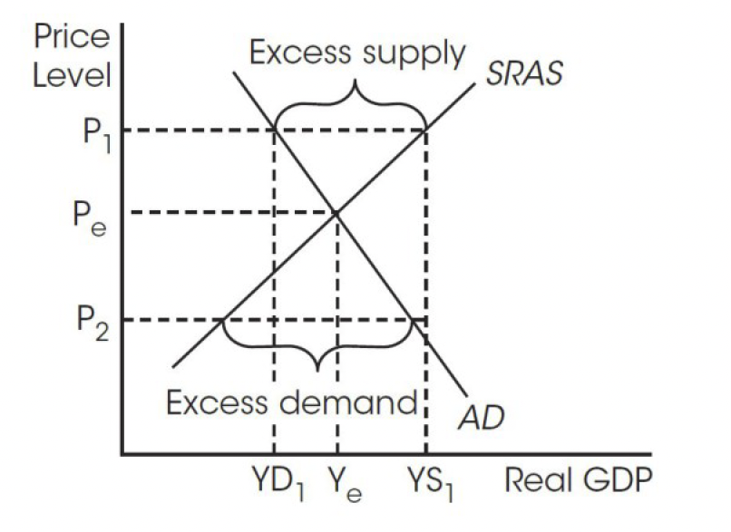
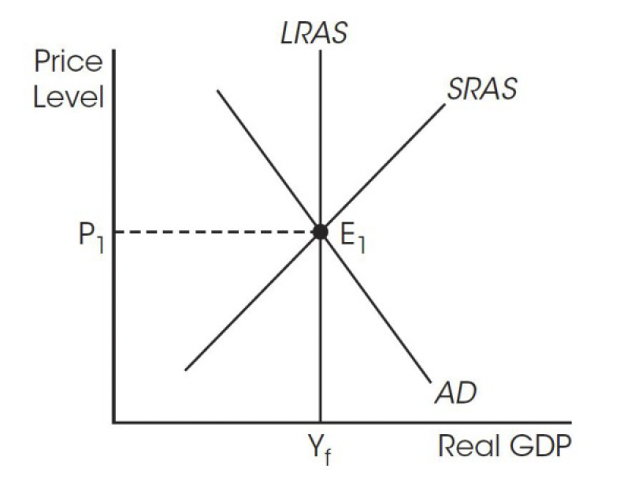

Equilibrium in the Aggregate Demand-Aggregate Supply (AD-AS) Model¶
Short-Run Equilibrium¶
The short-run equilibrium reaches when AD intersects SRAS like the market equilibrium in microeconomics. When the price level is above the equilibrium price level, there is excess supply. When the price level is below the equilibrium price level, there is excess demand.
AD-AS Model¶
Important
Shifters of AD, where AD = C + I + G + (X - M)
Change in consumer spending
Change in investment spending
Change in government spending
Change in net export
Shifters of AS, where AS = R + A + PChange in resources prices
Change in actions of the government
Change in productivity
When AD shifts to the left, the real GDP decreases from Y1 to Y2 and the price level decreases from P1 to P2. The decline in real GDP implies:
Lower production
Lower income
More unemployment
When AS shifts to the left, the real GDP decreases from Y1 to Y2 and the price level increases from P1 to P2. The decline in real GDP implies:
Lower production
Higher resource prices
More unemployment
Long-Run Equilibrium¶
The long-run equilibrium is operating in full equilibrium where AD, SRAS, and LRAS intersect. The real GDP in full equilibrium is noted as Yf. The Y stands for real GDP and the f stands for full employment of resources. The full equilibrium point, E1, is a point on the PPC.
